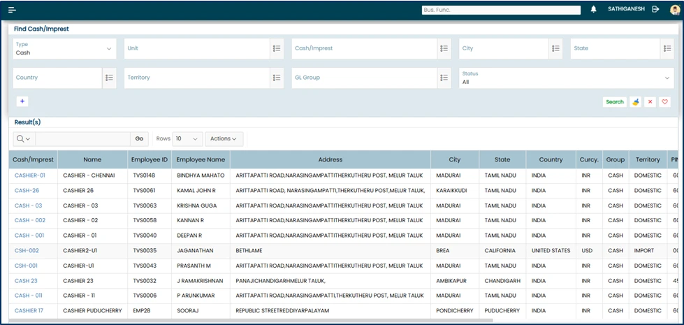
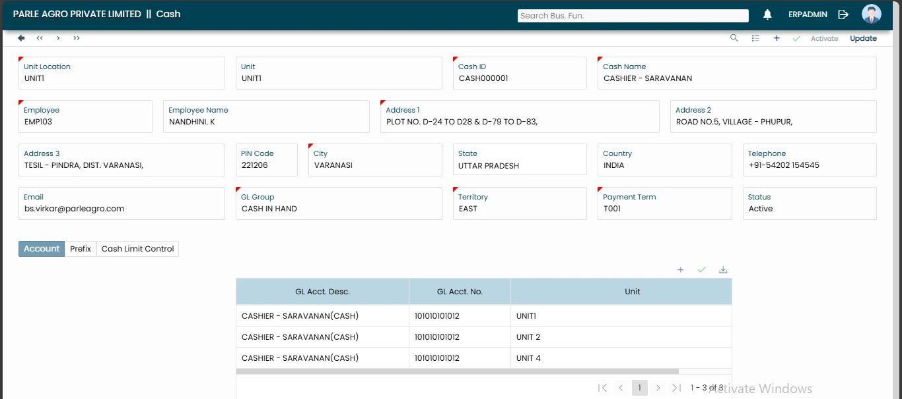

<div data-category="Financials" data-title="Cash/Imprest" data-updated="December 01, 2025" data-contributors="RoadmapIT" data-breadcrumb="Home,Financials,Cash/Imprest">
  <div class="page-content">
    <p>A business uses a Cash/Imprest to cover small, regular expenses. The imprest is a cash account that always has a fixed balance, because it is refilled frequently. Creating an imprest for the company can help the user to control and monitor the petty cash expenditures that occur in the daily operations of the business.</p>
    <p>This screen is used to create Cash/Imprest.</p>
    <h2>Navigation path</h2>
    <p class="fs-6">Setup \ Cash/Imprest</p>
    
    <ul style="list-style-type: none; align-content: center">
      <li class="mouse-icon">Search screen displays the list of Cash/Imprestwith the relevant details.</li>
      <li class="mouse-icon">Click on search to filter all the records.</li>
      <li class="mouse-icon">User can filter the respective documents by entering the search parameters at the header.</li>
      <li class="mouse-icon">Using search, system displays the results relevant to the search parameters entered.</li>
      <li class="mouse-icon">On-click; the corresponding transaction record will be displayed.</li>
      <li class="mouse-icon">
        Using
        
        icon, entered search parameters can be cleared.
      </li>
      <li class="mouse-icon">
        To close the screen, use
        <i class="bi bi-x fs-4 mx-2 text-danger"></i>
        icon.
      </li>
      <li class="mouse-icon">
        By Clicking the
        <i class="bi bi-plus fs-4 mx-2 text-primary"></i>
        Add button we can create new Cash/Imprest
      </li>
    </ul>
    
    <ul style="list-style-type: none; align-content: center">
      <li class="mouse-icon">Enter/Select the Unit from LOV.</li>
      <li class="mouse-icon">Enter the Cash ID and Cash Name.</li>
      <li class="mouse-icon">Select the Employee from LOV.</li>
      <li class="mouse-icon">Enter the Address1, Address 2 and Address 3.</li>
      <li class="mouse-icon">Enter the Telephone No.</li>
      <li class="mouse-icon">Enter the Email ID.</li>
      <li class="mouse-icon">Select GL Group.</li>
      <li class="mouse-icon">Select Territory</li>
      <li class="mouse-icon">Enter Payment Term.</li>
      <li class="mouse-icon">
        In Account Tab, Click
        <i class="bi bi-plus fs-4 mx-2 text-primary"></i>
        button to add a GL Group
      </li>
      <li class="mouse-icon">Select a GL Group for cash account creation.</li>
      <li class="mouse-icon">Prefixes are separated for bank & Cash. Prefix should be separately given for each cashier for payment, receipt.</li>
    </ul>
    
    <ul style="list-style-type: none; align-content: center">
      <li class="mouse-icon">Click Activate Button to activate the Cashier and the status will be changed from Draft to Active.</li>
    </ul>
  </div>
</div>
